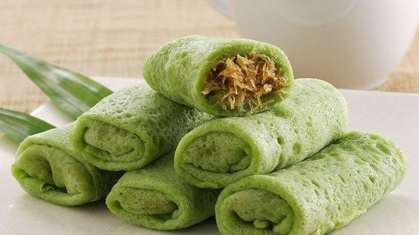

Kue Dadar Gulung

Kue dadar gulung (Melayu: kuih ketayap—dialek Sabah: kuih lenggang) merupakan makanan khas Indonesia dan Malaysia yang dapat digolongkan sebagai panekuk yang diisi dengan parutan kelapa yang dicampur dengan gula jawa cair. Isi ini disebut unti. Kulit dadar gulung berwarna hijau karena diberi pewarna daun suji. Kue Dadar Gulung di Toko Kue Pelangi bisa di dapatkan dengan harga satuan Rp2.500. Untuk informasi lebih lanjut bisa menghubungi kami melalui sosial media yang ada pada menu kontak kami.